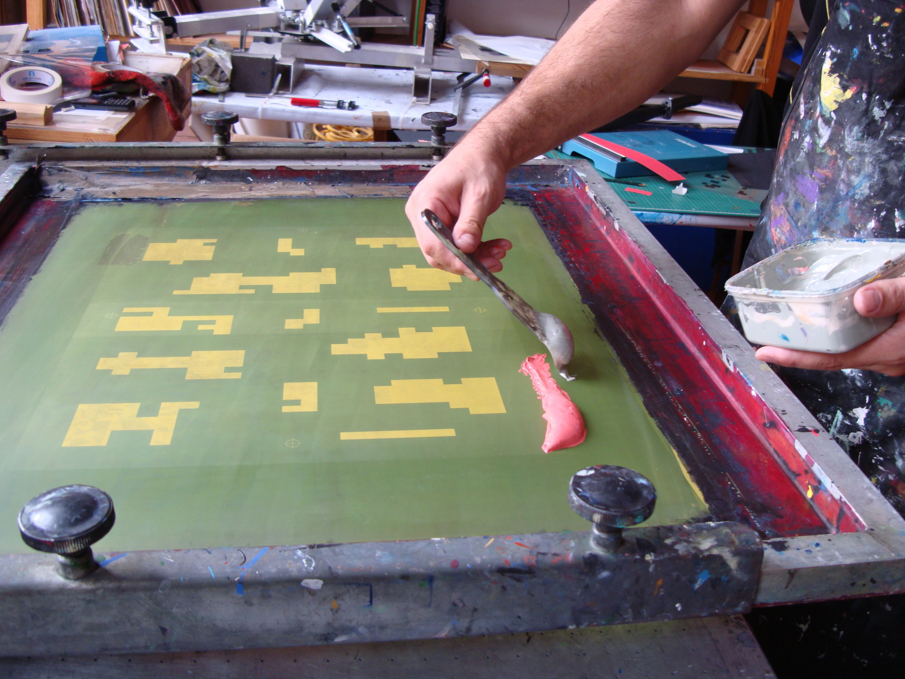
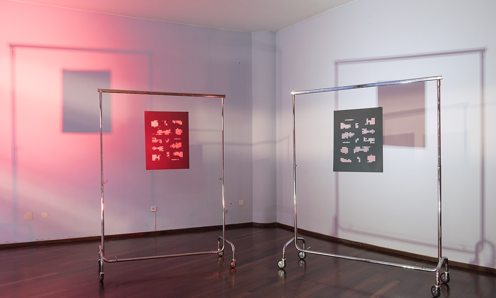

Mosaico
Mosaico results from the exploration of the plasticity of the electronic image for the construction and manipulation of visual structures characterized by geometric patterns. These patterns are generated through changes in color, position, scale and resolution, using the zoom and movements of a video camera and the processing of analog effects with video equipament for the spontaneous creation of abstract forms in real time.

Mosaico Serigraphy Serie
Made at Oficina Atalaia, Porto, 2019
Made at Oficina Atalaia, Porto, 2019

Poste - vídeo arte
Group Exhibition, Curated by Francisco Laranjeira, Extéril, Porto, 2019
Group Exhibition, Curated by Francisco Laranjeira, Extéril, Porto, 2019


Via Aberta
Group Exhibition, Mota Galiza, Porto, 2019
Group Exhibition, Mota Galiza, Porto, 2019
